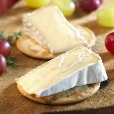
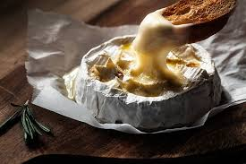
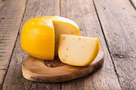
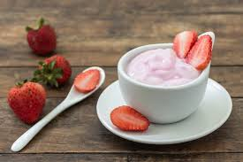
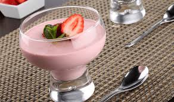

Quesos

Brie Artesanal
Queso blando de corteza florida, cremoso y con delicado sabor a nuez.

Camembert Tradicional
Textura cremosa y aroma intenso. Perfecto para derretir o disfrutar solo.

Queso Fresco de Vaca
Suave, ligeramente salado. Ideal para ensaladas, tacos y postres.

Gouda Ahumado
Curado y ahumado naturalmente con madera de encino. Sabor profundo.
Yogurts

Yogur con Fresa
Yogur cremoso batido con trozos de fresa fresca natural.

Yogur Griego Frutos Rojos
Extra espeso con mermelada casera de frutos del bosque.

Yogur Natural Entero
100% natural, sin azúcar añadida. Ideal para desayunos saludables.

Yogur Cremoso Vainilla
Sabor suave a vainilla bourbon. Perfecto como postre ligero.
Mousse

Mousse de Fresa
Delicado mousse de yogur natural con fresas frescas y miel.

Mousse de Vainilla
Crema suave de vainilla con caramelo artesanal por encima.

Mousse de Mora Azul
Intenso sabor a mora silvestre. ¡Nuestro best-seller!

Mousse de Chocolate
Chocolate amargo 70% con crema de leche fresca. Irresistible.